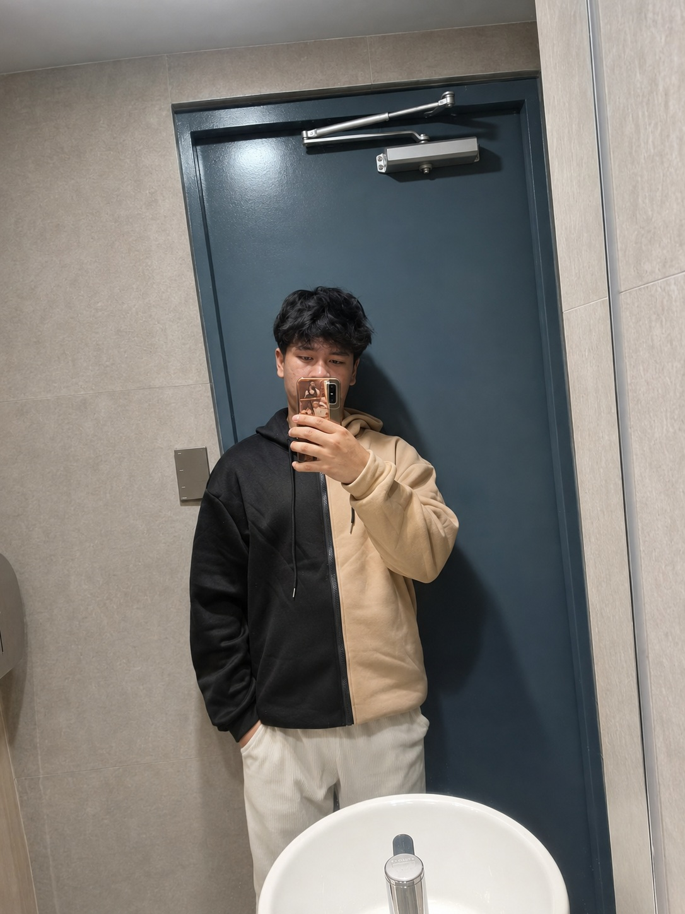

ABOUT ME
Stories worth remembering.
Hello, I’m Clarence Dean Argana Abeleda, a BSIT student at the University of Perpetual Help.
Ever since I became interested in computers and gaming, I’ve been fascinated by how technology can create interactive experiences that connect with people. Story-driven indie games inspire me because they bring creativity, emotion, and innovation together.
I’m curious, determined, and eager to learn. I’m open to new skills and ideas, and I like challenging myself to go beyond what I already know.
Get in touchWHAT I'M WORKING TOWARD
My goal: story-driven games.
My goal is to create story-driven indie games that leave a lasting impact. I also want to explore other areas of game development and technology, widen my skills, and keep pushing my creative boundaries. Outside the screen, I enjoy video games, anime and K-dramas, books, and music.